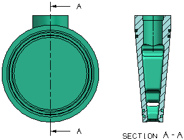

预计完成这堂课需要：4–5 分钟
剖视图去除模型的一部分材料来描绘一个模型，以便可以揭示某些或全部内部特征。

在 NX 中，通过选择一个父视图，然后在其中放置一个或多个剖切位置来创建剖视图。当您指定剖切位置时，将自动在父视图中生成一个剖切线符号，然后根据剖切视位置以及箭头方向投影父视图，关联的剖面线出现在剖视图中，并且自动指定剖切字母到剖切线符号和视图标签中。
由于剖视图依赖于父视图中的剖切线符号以及父视图本身，所有您无法在删除剖视图前删除其中任何一个。